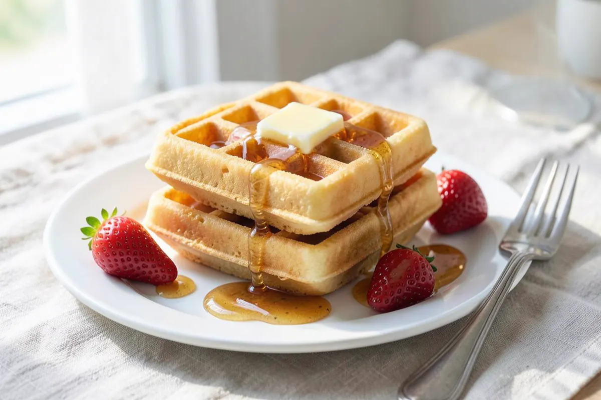

Buttermilk Waffles

Illustrative image.
Waffles are not just pancakes cooked in a different machine. A good waffle is crisp on the outside with a light, almost airy interior, and the deep pockets are there to hold butter and syrup rather than to look decorative.
Two things get you there: buttermilk, for tenderness and flavour, and egg whites folded in at the end, which is the difference between a dense waffle and one that shatters when you cut it.
Ingredients
- 2 cups all-purpose flour
- 2 tbsp granulated sugar
- 2 tsp baking powder
- 1/2 tsp baking soda
- 3/4 tsp kosher salt
- 2 cups buttermilk
- 2 large eggs, separated
- 6 tbsp unsalted butter, melted and cooled
- 1 tsp vanilla extract
- Maple syrup and berries, to serve
Instructions
- Heat the waffle iron. Whisk the flour, sugar, baking powder, baking soda and salt together in a large bowl.
- Whisk the buttermilk, egg yolks, melted butter and vanilla in a jug. Pour into the dry ingredients and stir until just combined; the batter should be thick and lumpy, and a few dry patches are fine.
- Beat the egg whites to soft peaks, either with a hand mixer or a balloon whisk, then fold them into the batter in two additions. Stop folding as soon as no white streaks remain.
- Pour about 3/4 cup of batter onto the hot iron, spreading it lightly towards the corners, and cook for 4 to 5 minutes, until the steam slows and the lid lifts away cleanly.
- Keep finished waffles on a rack in a 200°F (95°C) oven rather than stacking them, so the outsides stay crisp while the rest cook.
Why this recipe works
The acid in buttermilk tenderises the gluten and reacts with the baking soda to give a faster, more even rise. Separating the eggs and whipping the whites adds air that the batter would otherwise not hold, and folding them in gently preserves it. A hot iron matters as much as the batter: the waffle needs to set quickly so steam pushes it up into the pockets before the structure firms.
Tips for success
- Let the batter rest for ten minutes before folding in the egg whites. The flour hydrates and the waffles come out more tender.
- Fold, do not stir, once the whites go in. You are trying to keep the air, not combine perfectly.
- Heat the iron for a full ten minutes, even if the light says it is ready.
- Do not open the lid early. Waffles tear when they are still setting; wait until the steam slows.
- Cool finished waffles on a rack in a warm oven rather than stacking them, or the steam makes them soft.
Substitutions that work
- No buttermilk? Use milk with a tablespoon of lemon juice per cup, rested for ten minutes.
- Whole wheat pastry flour can replace half the all-purpose flour without making them heavy.
- Melted coconut oil works in place of butter, though the flavour will be different.
- Add a teaspoon of cinnamon and a handful of chopped pecans for a variation that needs no other changes.
Storage and make-ahead
Keep cooked waffles in the fridge for three days or freeze for two months, separated by parchment. Reheat straight from frozen in a toaster or a 350°F (175°C) oven for 6 to 8 minutes; a microwave will make them limp. Batter can be mixed the night before, with the egg whites folded in just before cooking.
Serving suggestions
Serve with butter, maple syrup and fruit, or go savoury with fried chicken, poached eggs or a spoonful of chili. Cold waffles are also good torn into a bowl with yogurt and berries.
Frequently asked questions
Why are my waffles soft instead of crisp?
Usually an iron that is not hot enough, or waffles stacked while hot. Heat the iron fully, cook until the steam slows, and hold finished waffles on a rack in a warm oven.
Can I use milk instead of buttermilk?
Yes. Stir a tablespoon of lemon juice or vinegar into each cup of milk and leave it for ten minutes, which gives the same acidity.
Can I freeze waffles?
Yes, and they reheat better than most breakfast foods. Freeze in a single layer, then bag them; toast straight from frozen until crisp.